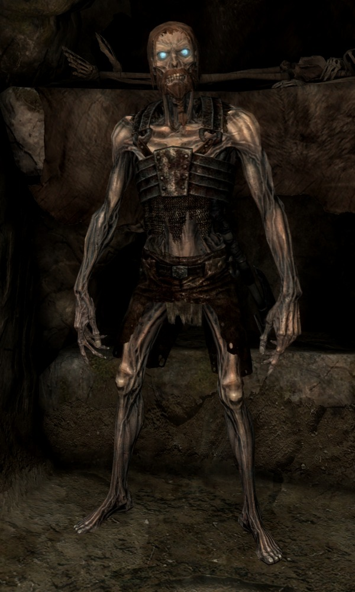

Draugr Crocs

Description
'Tis but a break of ye fast! Nevertheless, this meal meet no sort of competitor
in the ways of quick and nourishing edibles.
Here we have a simple display of dried meat over seasoned bones, all
properly aged within a dungeon from ages passed.
Although it may seem a little harsh on ye bowels, this heavy-probiotic meal
is all you need for a steady and fed dungeoneering venture, since it'll keep you energized
and stimulated for the many laborious hours ahead. Good luck!
Ingredients
- A viking warrior aged throughout millennia
- Oil balms from the old sages
- A pinch of forbidden magic
- Salt n Pepper at your own desire
Step by step
- find a young and talented warrior from scandinavia and train him across many
battles until he's at least a local legend. Then, finally, when he passes,
bury him with all his honours on a deep, dark, ancient and forgotten dungeon.
Before sealing the tomb, cast a bit of that forbidden magic we talked about.
Wait a couple thousand years and voilà! You'll have a Draugr! (tip: humans
can't stand the passing of time for, usually, more than a century. Get yoursel
a life elixir to make sure you'll make it, OR, as an alternate shortcut,
just find right now an abandoned dungeon, grab ye a shovel and start grave digging,
you nasty devil!)
- defeat the angry risen undead as soon as it awakes, for it's grave will serve
as our grill/ oven
- light a fire beneath the sarcophagus (390F) and bake the grave for 120 minutes.
Take those hours to explore your surroundings and to be thankful for another
meal in this dark outpost.
- Open the casket and dispose his armor and whatever else is undesirable
to you. Now we'll make the crocs! The meat n' bones should be all
easy to fold and mix. Make hand-sized balls of mashed draugr and pepare,
finally, to grill them. Use the floor of the tomb, which should still be
hot from the fire you lit, and grill the meatballs for 5 minutes.
- And... It's done! Have a good Draugr Croc, don't forget to share it
with your whole party!
A word about "cannibalism":
You might feel bad about eating what once was your kin, but fear not! Magic
turns the undead into monsters, therefore, non-humans! Forget your sophisticated
moral values and enjoy this meal for your health's sake.